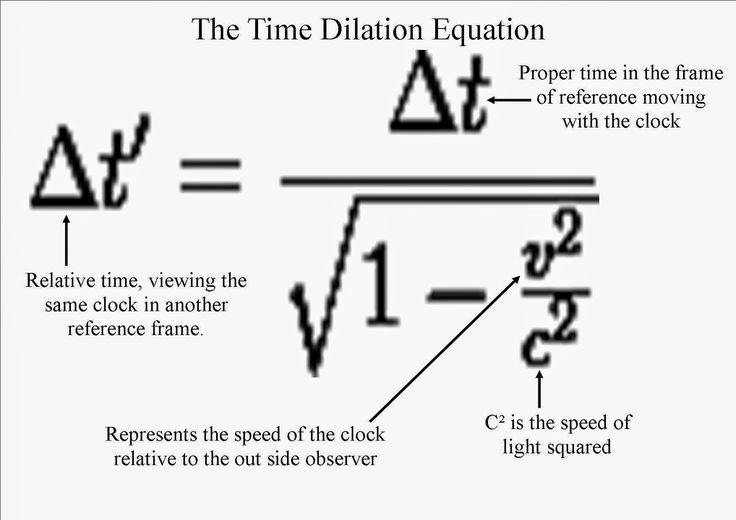

- Introduction: Why time dilation ?
- Example scenario
- Using the Time Dilation Calculator
Danny Cohen

Source: https://www.pinterest.com/pin/69876231694436244
speedOfLight <- 299792458 / 1000 # speed of light in vacuum (In Kilometers Per Second)
percent <- 0.8; years <- 10
travelingSpeed <- percent * speedOfLight
timeDilationFactor <- (1 / sqrt(1 - (travelingSpeed^2 / speedOfLight^2) ))
durationFromStationaryObserverPerspective <- timeDilationFactor * years
sprintf("Elasped years from stationary observer perspective: %1$1.2f", durationFromStationaryObserverPerspective)
## [1] "Elasped years from stationary observer perspective: 16.67"